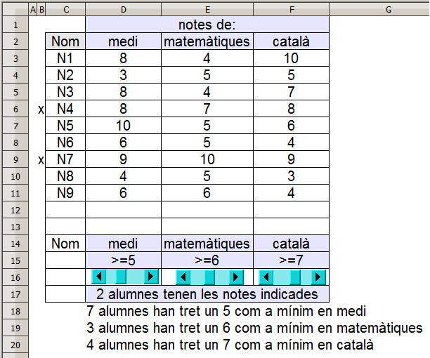

Presentació gràfica de l'activitat

Funcions que es fan servir en aquesta activitat
Objectiu de l'activitat
Extraure dades concretes d'una taula de dades.
Desenvolupament de l'activitat
1. Fer una barra de desplaçament, enllaçar-la a la cel·la H5 i fer que tingui els següents atributs:
Valor mínim de la barra: 0
Valor màxim de la barra: 10
Que tingui un color de fons semblant al que es veu en el gràfic de la presentació de l'activitat
2. Escriure a la cel·la D15: =">="&H15
Amb aquesta fòrmula, es concatenen els símbols d'igual o major que (
=>) amb el valor de la cel·la H15
3. Fer dues copies de la barra de desplaçament tenin en compte que els enllaços a les cel·les seran
I15 i
J15 respectivament.
Situar les tres barres de desplaçament com es veu en el gràfic de la presentació de l'activitat.
Per variar el valor de les notes, només cal fer clic als extrems de les barres de desplaçament
4. Escriure a la cel·la
E15:
=">="&I15
5. Escriure a la cel·la
D15:
=">="&J15
6. Escriure a la cel·la
H3:
=SI(D3>=$H$15;1;"")
Amb aquesta fòrmula, la cel·la
H3 tindrà un valor d'1 si la cel·la
D3 és igual o major al valor de la cel·la
H15
Copiar la cel·la
H3 a les cel·les del rang
H4:H11
8. Escriure a la cel·la
H18:
=SUMA(H3:H11). D'aquesta manera se sap el número d'alumnes que han tret com a mímin la nota de la cel·la
D15 corresponent al medi.
9. Escriure a la cel·la
I3:
=SI(E3>=$I$15;1;""). Segueix el mateix procediment que el punt
2
10. Copiar la cel·la
I3 a les cel·les del rang
I4:I11
11. Escriure a la cel·la
H19:
=SUMA(I3:I11). D'aquesta manera se sap el número d'alumnes que han tret com a mímin la nota de la cel·la
E15 corresponent a matemàtqiues.
12. Escriue a la cel·la J3: =SI(F3>=$J$15;1;"")
13. Copiar la cel·la
J3 a les cel·les del rang
J4:J11
14. Escriure a la cel·la
H20:
=SUMA(J3:J11). D'aquesta manera se sap el número d'alumnes que han tret com a mímin la nota de la cel·la
F15 corresponent a català.
Per saber quants alumnes tenen les tres notes corresponents a les cel·les
D15,
E15 i
F15, es pot fer el següent:
15. Escriure a la cel·la
H17:
=BDCOMPTA(C2:F11;0;C14:F15)
La funció BDCOMPTA(BaseDeDades; CampDeBaseDeDades; CriterisDeCerca) compta el nombre de files d'una base de dades que coincideixen amb els criteris de cerca que s'indica. En aquesta pràctica la base de dades és C2:F11 i el criteri de cerca és C14:F15. El camp de Base de Dades té el valor de 0 amb la qual cosa la funció s'aplica a tota la base de dades.
El valor que retorna la cel·la H17 és el número d'alumnes que coincideixen amb les dades que hi ha en les cel·les D15, E15 i F15
16. Escriure a la cel·la
K12:
cap alumne té les notes indicades
17. Escriure a la cel·la
K13:
1 alumne té les notes indicades
18. Escriure a la cel·la
K14:
alumnes tenen les notes indicades
19. Escriure a la cel·la
D17:
=SI(H17=0;K12;SI(H17=1;K13;SI(H17>1;H17&" "&K14)))
Amb aquesta fórmula es concatena el valor de la cel·la H17 amb el text que hi ha en alguna de les cel·les del rang K12:K14 en funció de si el valor de la cel·la H17 és igual a 0, si és igual a 1 o si és major que 1.
Per mostrar quants alumnes han tret una determinada nota com a mínim, es pot fer el següent:
20. Escriure a la cel·la
K18:
="cap alumne ha tret un "
21. Escriure a la cel·la
K19:
="1 alumne ha tret un "
22. Escriure a la cel·la
K20:
=" alumnes han tret un "
23. Escriure a la cel·la
D18:
=SI(H18=1;K19;SI(H18>1;H18&K20&H15;K18))&" com a mínim en medi"
24. Escriure a la cel·la
D19:
=SI(H19=1;K19;SI(H19>1;H19&K20&I15;K18))&" com a mínim en matemàtiques"
25. Escriure a la cel·la
D20:
=SI(H20=1;K19;SI(H20>1;H20&K20&J15;K18))&" com a mínim en català"
26. Ocultar les cel·les que convingui
27. Comprovar que l'activitat funcioni correctament.
28. Desar el fitxer
M7